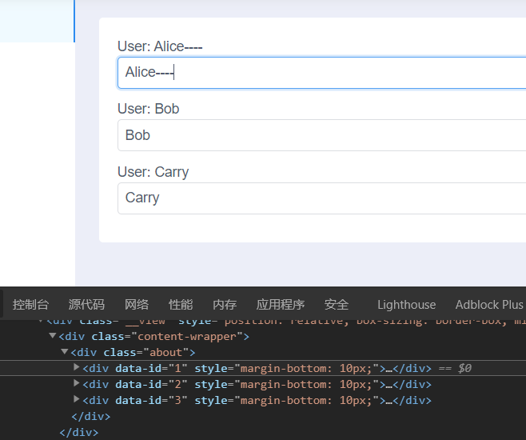
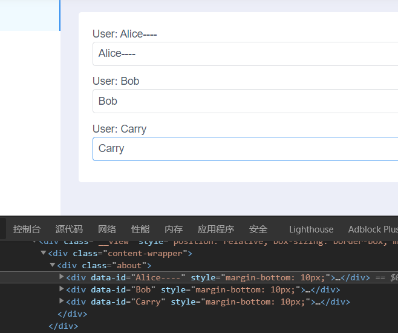

我们都知道使用 v-for 渲染数组时都要给每个元素绑定一个 key，官方文档 也说的很清 (挠) 楚 (头):
当 Vue 正在更新使用 v-for 渲染的元素列表时，它默认使用“就地更新”的策略。如果数据项的顺序被改变，Vue 将不会移动 DOM 元素来匹配数据项的顺序，而是就地更新每个元素，并且确保它们在每个索引位置正确渲染。
key 的特殊 attribute 主要用在 Vue 的虚拟 DOM 算法，在新旧 nodes 对比时辨识 VNodes。如果不使用 key，Vue 会使用一种最大限度减少动态元素并且尽可能的尝试就地修改/复用相同类型元素的算法。而使用 key 时，它会基于 key 的变化重新排列元素顺序，并且会移除 key 不存在的元素。
有相同父元素的子元素 必须有独特的 key ，重复的 key 会造成渲染错误。
需要记住一点: 当用来创建 DOM 元素的数据变化后，就会更新 DOM (更新了才能在界面上看到)，为了提高效率，vue 使用了 key 来判断是复用已有的 DOM 还是创建新的 DOM (在同一个 parent DOM element 下进行比较):
如果能找到相同 key 的 DOM 元素，则更新它的内容
如果找不到相同 key 的 DOM 元素，则删除旧的 DOM 元素，新创建一个
上面的内容，懂的人一看就懂，不懂的人仍然是一头雾水。下面我们以一个很简单的修改用户名的例子演示一下应该就能明白什么时候复用，什么时候创建了。
复用: key 使用不变的值 使用 user.id 作为 key，并且不改变 user.id:
1 2 3 4 5 6 7 8 9 10 11 12 13 14 15 16 17 18 19 20 21 22 23 <template > <div class ="gumi" > <div v-for ="user in users" :key ="user.id" :data-id ="user.id" style ="margin-bottom: 10px" > User: {{ user.name }} <Input v-model ="user.name" /> </div > </div > </template > <script > export default { data ( return { users : [ { id : 1 , name : 'Alice' }, { id : 2 , name : 'Bob' }, { id : 3 , name : 'Carry' }, ] }; }, }; </script >
当在输入框中输入时，name 的值发生了变化，但 DOM 元素的 data-id 没有变化，说明对应的 DOM 元素是复用已经存在的。

新建: key 使用变化的值 使用 user.name 作为 key，输入的时候 user.name 会发生变化:
1 2 3 4 5 6 7 8 9 10 11 12 13 14 15 16 17 18 19 20 21 22 23 <template > <div class ="about" > <div v-for ="user in users" :key ="user.name" :data-id ="user.name" style ="margin-bottom: 10px" > User: {{ user.name }} <Input v-model ="user.name" /> </div > </div > </template > <script > export default { data ( return { users : [ { id : 1 , name : 'Alice' }, { id : 2 , name : 'Bob' }, { id : 3 , name : 'Carry' }, ] }; }, }; </script >
当在输入框中输入时，name 的值发生了变化，而且 DOM 元素的 data-id 发生了变化，说明对应的 DOM 元素是新创建的。而且我们会发现，输入一个字符后，Input 会失去焦点，我们当前看到的 Input 是新创建的，得到与失去焦点的是旧的 Input (已被删除)。

动态唯一 ID 作为 key 例如渲染一个普通的数组，数组的元素有可能重复，说明不能作为 key，而且也不推荐使用数组下标作为 key，那么我们就试试使用函数 uid() 动态的生成唯一 ID 作为数组元素的 key:
1 2 3 4 5 6 7 8 9 10 11 12 13 14 15 16 17 18 19 20 21 22 23 24 25 26 27 28 <template > <div class ="about" > <div v-for ="(name, index) in names" :key ="uid(name)" :data-id ="uid()" style ="margin-bottom: 10px" > <Icon type ="ios-close-circle" @click ="remove(index)" /> {{ name }} </div > </div > </template > <script > export default { data ( return { names : ['Alice' , 'Bob' , 'Alice' , 'Carry' ], }; }, methods : { uid ( return Date .now() + Math .random(); }, remove (index ) this .names.splice(index, 1 ); } } }; </script >
当点击关闭图标后，会从数组中删除对应的元素，并且更新界面，从 DOM 树中会看到数组相关的 DOM 元素都是新建的。从使用的角度上来说没有问题，能够正常使用，只是理论上效率会差一些，数据量小的时候也感觉不出来。当元素像 Input 那样需要焦点的话，新创建的元素不会得到焦点，用户体验上很差。所以能够使用固定的值作为 key 的话，尽量的使用固定的值，如果是一个对象，可以给它创建唯一 ID 的属性，然后使用此属性作为 key。
疑问 上面的例子中看到 name 的 div 动态创建了，但是它的 parent <div class="about"> 有没有动态创建呢？如下尝试使用一个计算属性作为 key <div class="about" :key="id" :id="id">，可以看到它没有被更新。
1 2 3 4 5 6 7 8 9 10 11 12 13 14 15 16 17 18 19 20 21 22 23 24 25 26 27 28 29 30 31 32 33 34 <template > <div class ="about" :key ="id" :id ="id" > <div > <p v-for ="(name, index) in names" :key ="index" style ="margin-bottom: 10px" > <Icon type ="ios-close-circle" @click ="remove(index)" /> {{ name }} </p > </div > </div > </template > <script > export default { data ( return { names : ['Alice' , 'Bob' , 'Alice2' , 'Carry' ], }; }, methods : { uid ( return Date .now() + Math .random(); }, remove (index ) this .names.splice(index, 1 ); } }, computed : { id ( return Date .now(); } } }; </script >